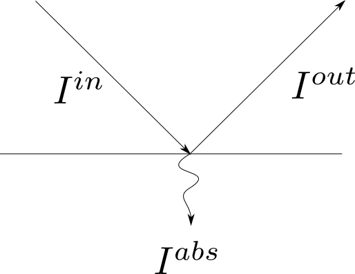
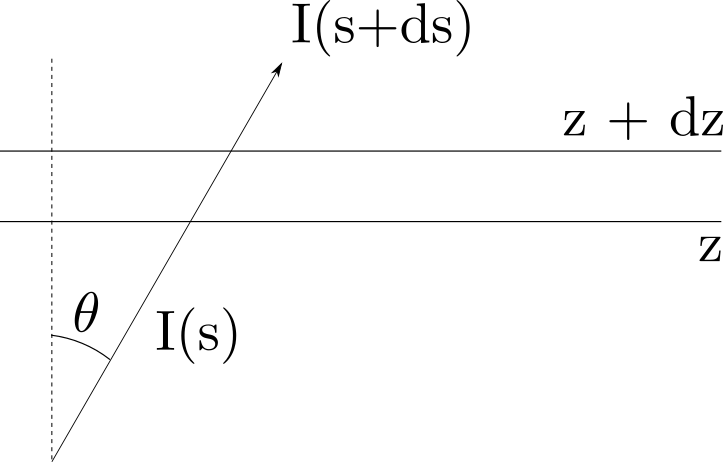

Équation du Transfert Radiatif
Table of Contents
1 Questions/Interrogations
Aujourd'hui on se demande d'où vient l'équation utilisée dans RTTOV qui est :
\begin{equation} I^{clr} = t_s( \nu, \theta ) \epsilon_s( \nu, \theta ) B(\nu, T_s) + \int_ts^1 B(\nu, t)dt + \left( 1 - \epsilon_s \right) t^2 (\nu, \theta) \int_ts^1 \dfrac{B(\nu, T)}{t^2}dt \label{etr} \end{equation}avec :
- εs : émissivité de la surface
- T : température de la surface
- ts : transmittance de la surface vers le sommet de l'atmosphère
Les différents termes correspondent à :
- L'émission de surface transmise à travers l'atmosphère.
- L'émission montante de l'atmosphère.
- L'émission descendante de l'atmosphère qui se réfléchie sur la surface.
1.1 Émissivité/Absorptivité
1.1.1 Sans rayonnement transmis
Pour un rayon arrivant sur un matériau isotherme la conservation de l'énergie impose un flux total nul.

Figure 1: Réfléctivité et absorbance
Iin = Iabs + Iout
Iout = r Iin
donc
(1-α-r)Iin = 0
soit α = 1-r
Kirchoff : ε = α
Finalement : r = ( 1 - ε )
2 Démonstration
Pour arriver à l'équation \ref{etr}, écrivons le bilan radiatif à travers une couche d'atmosphère plane.

Figure 2: Schéma du rayonnement qui traverse une couche mince et plane
Par géométrie : ds = \dfrac{dz}{\mu}, avec μ = cos(θ)
En négligeant la diffusion. Le bilan sur une couche mince nous donne :
\begin{equation} \dfrac{dI}{ds} = \beta \left(B_a - I \right) \label{bilan} \end{equation}On introduit la profondeur optique:
\begin{equation} \delta(s) = \int_s^c \beta_a(s)ds \end{equation}avec \(c\) la position du détecteur.
Ainsi, dδ = -βa ds
L'équation \ref{bilan} devient alors :
\begin{equation} \dfrac{dI}{d\delta} = I - B \end{equation}En multipliant des deux cotés par e -δ on obtient :
\begin{equation} e^{ -\delta } \dfrac{dI}{d\delta} = ( I - B )e^{ -\delta } \end{equation}Soit
\begin{equation} \dfrac{d}{d\delta}\left( I e^{ -\delta }\right) = B e^{ -\delta } \end{equation}En intégrant sur δ entre le capteur (δ = 0) et un point S :
\begin{equation} I(\delta) e^{ -\delta } - I(0) = - \int_0^{\delta} B e^{ -\delta } d\delta \end{equation}Maintenant en introduisant la transmittance t = e -δ soit dt = - e -δ dδ, on obtient :
\begin{equation} I(0) = I(\delta)t(\delta) + \int_{t(\delta)}^{1} B dt \end{equation}